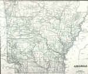
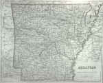
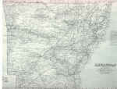
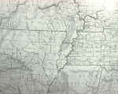
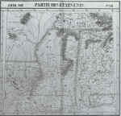
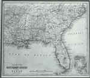
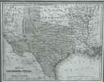
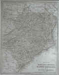

<!DOCTYPE HTML PUBLIC "-//W3C//DTD HTML 4.01 Transitional//EN"        "http://www.w3.org/TR/html4/loose.dtd">
<html lang="en">

<head>
<title>Charles Dunn:&nbsp; &quot;Finding Our Way: A Map of Our Past&quot; - Henderson 
State University</title>
<meta http-equiv="Content-Language" content="en-us">
<meta http-equiv="Content-Type" content="text/html; charset=windows-1252">
<meta name="GENERATOR" content="Microsoft FrontPage 5.0">
<meta name="ProgId" content="FrontPage.Editor.Document">
<meta name="copyright" content="Copyright © 2002 Henderson State University">
<meta name="rating" content="General">
</head>

<body background="ARlogoborder.jpg" link="#006600" vlink="#006600" alink="#006600" bgcolor="#FFFFFF">

<div align="right">
  <table border="0" width="85%">
    <tr>
      <td width="100%" align="left">
        <blockquote>
          <p class="MsoNormal"><b><font face="Arial" size="5" color="#006600"><span style="mso-bidi-font-size: 10.0pt">Charles
          Dunn</span></font><span style="font-size:18.0pt;mso-bidi-font-size:10.0pt"><o:p>
          </o:p>
          </span></b></p>
        </blockquote>
        <p class="MsoNormal"><span style="font-size:14.0pt;mso-bidi-font-size:10.0pt">Finding
        Our Way: A Map of Our Past<o:p>
        </o:p>
        </span></p>
        <p class="MsoNormal" style="margin-left:.5in"><font size="2">I was asked
        by the editor of <span style="mso-bidi-font-style:italic">the</span><i style="mso-bidi-font-style:normal">
        Arkansas Literary Forum</i> to write a brief essay regarding my deep
        interest in and affection for old maps, particularly antique maps of
        Arkansas and the American South.<span style="mso-spacerun: yes">&nbsp; </span>This
        request was made, I believe, as a result of a comment I made in my 1999
        “state of the university” address.<span style="mso-spacerun: yes">&nbsp;
        </span>In reference to our latest strategic planning effort, entitled <i style="mso-bidi-font-style:normal">Bold
        Strokes</i>, I noted that we were proceeding to implement our peculiar
        mission as Arkansas’s public liberal arts university <i>without a map</i>.<span style="mso-spacerun:
yes">&nbsp; </span>I noted further that, like many ancient maps that described
        unknown portions of the world with phrases like “here be dragons,”
        we were certain to enter difficult, if not dangerous, areas.<span style="mso-spacerun:
yes">&nbsp; </span>That comment was included in the context of my deep interest
        in antique, if not ancient, maps.<span style="mso-spacerun: yes">&nbsp; </span>I
        believe the editor’s interest in having me write an essay stems from
        his belief that my interest in maps has a purpose deeper than an
        appreciation of their beauty.<span style="mso-spacerun: yes">&nbsp; </span>To
        that belief, I must simply say “perhaps.”</font></p>
        <p class="MsoNormal"><b><span style="mso-bidi-font-size: 10.0pt"><font color="#006600" size="5">M</font></span></b><span style="font-size:12.0pt;mso-bidi-font-size:10.0pt">aps
        produced prior to the twentieth century have a beauty that is not
        often found in modern and more utilitarian versions.<span style="mso-spacerun: yes">&nbsp;
        </span>For maps, first of all, have great utility.<span style="mso-spacerun: yes">&nbsp;
        </span>They provide us a tool by which we can find our way from one
        location to another.<span style="mso-spacerun: yes">&nbsp; </span>They
        inform us of many physical and cultural characteristics of a defined
        geographic area; however, both the physical and cultural characteristics
        of our geography are subject to change.<span style="mso-spacerun: yes">&nbsp;
        </span>One may expect that the physical structure of the earth is less
        susceptible to change than cultural characteristics.<span style="mso-spacerun: yes">&nbsp;
        </span>It must be noted, however, that rivers change course from
        time-to-time, weather patterns cause physical structures, such as lakes
        and estuaries, to expand or contract, and, occasionally, mountains are
        moved (for instance, Mt. St. Helens in the State of Washington).<o:p>
        </o:p>
        </span></p>
        <p class="MsoNormal"><span style="font-size:12.0pt;mso-bidi-font-size:10.0pt">While
        physical changes in geography are significant and may be reflected on
        maps produced at a given time, they are not so interesting to me as
        those that directly reflect cultural change.<span style="mso-spacerun: yes">&nbsp;
        </span>When transportation routes (roads, railroads, etc.) change and
        when cities develop and later disappear from maps, significant cultural
        change is indicated.<span style="mso-spacerun: yes">&nbsp; </span>Examination
        of my 19<sup>th</sup> century maps of Arkansas reveals that many modern
        roads originated from mere trails.<span style="mso-spacerun: yes">&nbsp;
        </span>One may suspect that significant early-19<sup>th</sup> century
        roads, such as the various “military” roads, started out as Indian
        trails.<span style="mso-spacerun: yes">&nbsp; </span>The trails (and,
        later, roads) reveal something important about the people who lived here
        before us.<span style="mso-spacerun: yes">&nbsp; </span>Likewise, cities
        that were centers of trade 150 years ago are virtually deserted
        villages now.<span style="mso-spacerun: yes">&nbsp; </span>Some have
        literally disappeared, had name changes, or have been washed away by
        rivers or the Corps of Engineers.<span style="mso-spacerun: yes">&nbsp; </span>Exploring
        the reasons these changes took place and determining their impact offers
        important clues about our current condition.<span style="mso-spacerun: yes">&nbsp;
        </span><o:p>
        </o:p>
        </span></p>
        <p class="MsoNormal"><span style="font-size:12.0pt;mso-bidi-font-size:10.0pt">&nbsp;<o:p>
        </o:p>
        </span><span style="font-family:&quot;Times New Roman&quot;">One of my
        recent acquisitions, an 1827 map of the middle South, shows much of
        Arkansas as Indian Territory nearly a decade prior to statehood.<span style="mso-spacerun: yes">&nbsp;
        </span>The map is a lovely lithograph printed in Brussels with
        watercolor boundaries.<span style="mso-spacerun: yes">&nbsp; </span>On
        it one can find lines that depict areas that had been ceded to various
        Indian tribes, long before the infamous “Trail of Tears” removed
        many Native Indian tribes to Oklahoma.<span style="mso-spacerun: yes">&nbsp;
        </span>One wonders, “How did many Cherokees come to be in Arkansas
        prior to the ‘Trail of Tears?’”<span style="mso-spacerun: yes">&nbsp;
        </span>Research reveals that President Thomas Jefferson offered the
        Cherokees land in Arkansas between the White River and the Arkansas
        River if they would voluntarily move from North Carolina.<span style="mso-spacerun: yes">&nbsp;
        </span>Many Cherokees did in fact move; indeed, an early visitor to
        Arkansas territory noted that about 3,000 Cherokees were living in the
        northwest quadrant of the state in 1820 and most were more civilized
        than the Europeans living in the territory.<span style="mso-spacerun: yes">&nbsp;
        </span>The Cherokees farmed, constructed corn mills and salt production
        areas, and provided an educational system for their young.<span style="mso-spacerun: yes">&nbsp;
        </span>That much of this progress was lost to our state as a result of
        the “Trail of Tears” is a tragedy.<span style="mso-spacerun: yes">&nbsp;&nbsp;
        </span>One cannot but wonder how Arkansas would be different today if
        that very industrious and proud group of people had been permitted to
        continue to live in our state.<o:p>
        </o:p>
        </span></p>
        <p class="MsoNormal"><span style="font-size:12.0pt;
mso-bidi-font-size:10.0pt">The most important reason for my love of old maps,
        therefore, stems from my curiosity about how we came to be in this place
        at this time.<span style="mso-spacerun: yes">&nbsp; </span>I deeply
        value the beauty of my maps, but I value even more what they tell me
        about those who were here before us.<span style="mso-spacerun: yes">&nbsp;
        </span>A sequential review of 19<sup>th</sup> century maps reveals towns
        and villages appearing and disappearing. <span style="mso-spacerun: yes">&nbsp;</span>Some
        remain centers of trade today.<span style="mso-spacerun: yes">&nbsp; </span>Others
        literally withered away.<span style="mso-spacerun: yes">&nbsp; </span>One
        wonders “why.”<span style="mso-spacerun:
yes">&nbsp; </span>Why did Memphis, Tennessee, become an important metropolis
        and center of trade while Helena, Arkansas, which, in the late 19<sup>th</sup>
        century was much the same size as Memphis, remained a small, mainly
        agricultural community?<span style="mso-spacerun: yes">&nbsp; </span>Why
        did historic Old Washington, which served as the capital of the state
        under the Confederacy, cease to be a center of trade and population in
        the late-19<sup>th</sup> century?<span style="mso-spacerun: yes">&nbsp; </span>What
        happened to towns like Paraclifta and Panther that seemed to be
        important on the western border of our state over a century-and-a-half
        ago?<span style="mso-spacerun: yes">&nbsp; </span>What happened to
        Cadron and when did Conway emerge?<span style="mso-spacerun: yes">&nbsp;
        </span>How did the many dams constructed by the Corps of Engineers
        produce cultural change along Arkansas’s rivers?<span style="mso-spacerun: yes">&nbsp;
        </span>Answers to those questions may tell us much about those who came
        before us.<span style="mso-spacerun: yes">&nbsp; </span>Those are the
        questions that arise in my mind when I “explore” the antique maps in
        my collection.<span style="mso-spacerun: yes">&nbsp; </span>It is an
        effort that offers promise in our search to better understand how we
        came to be the way we are.<span style="mso-spacerun: yes">&nbsp; </span>It
        perhaps will provide us clues as we determine what we will become.</span></p>
            <p class="MsoNormal"><span style="font-size:12.0pt;
mso-bidi-font-size:10.0pt"><o:p>
            </o:p>
            </span><i><b><span style="mso-bidi-font-size: 10.0pt"><font size="2">*Click
            on image to enlarge.</font>
            </span></b></i></p>
        <table border="0" width="100%" cellspacing="0" cellpadding="10">
          <tr>
            <td width="20%" align="center"><a href="images/map1a.jpg">
            </a></td>
            <td width="20%" align="center"><a href="images/map1b.jpg">
            </a></td>
            <td width="20%" align="center"><a href="images/map1c.jpg">
            </a></td>
            <td width="20%" align="center"><a href="images/map1d.jpg">
            </a></td>
          </tr>
          <tr>
            <td width="20%" align="center"><a href="images/map1e.jpg">
            </a></td>
            <td width="20%" align="center"><a href="images/map1f.jpg">
            </a></td>
            <td width="20%" align="center"><a href="images/map1g.jpg">
            </a></td>
            <td width="20%" align="center"><a href="images/map1h.jpg">
            </a></td>
          </tr>
        </table>
        <p>&nbsp;
        </td>
    </tr>
  </table>
</div>

<p align="center"><a title="Select to go to the Home Page" href="2000.html">HOME</a></p>

</body>

</html>